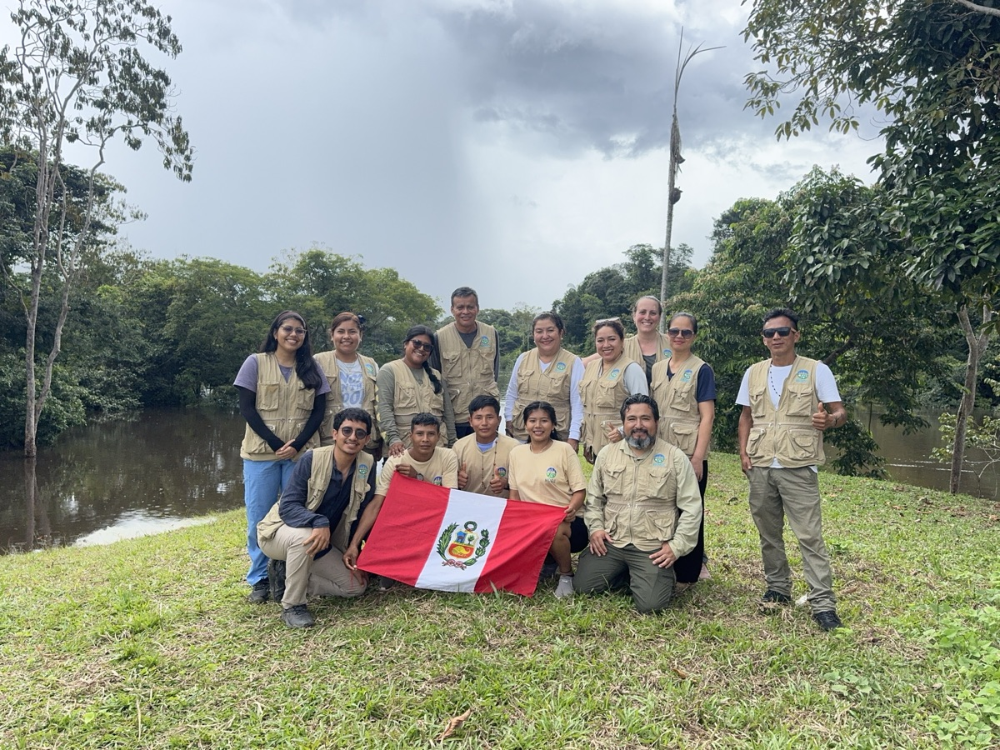
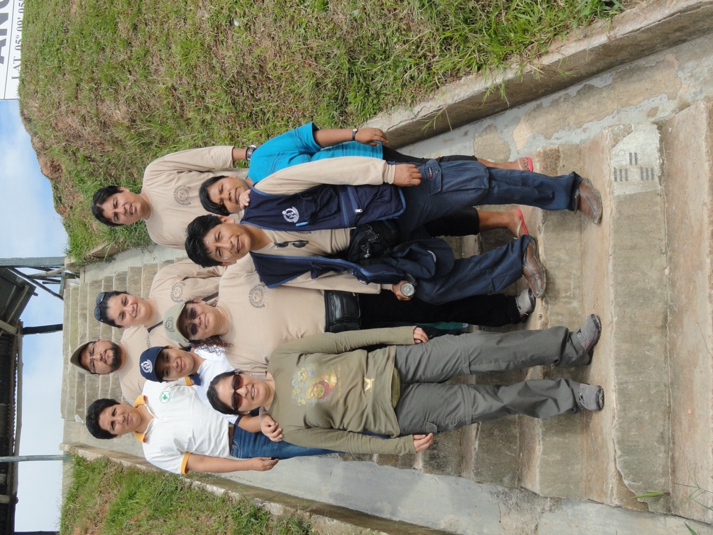
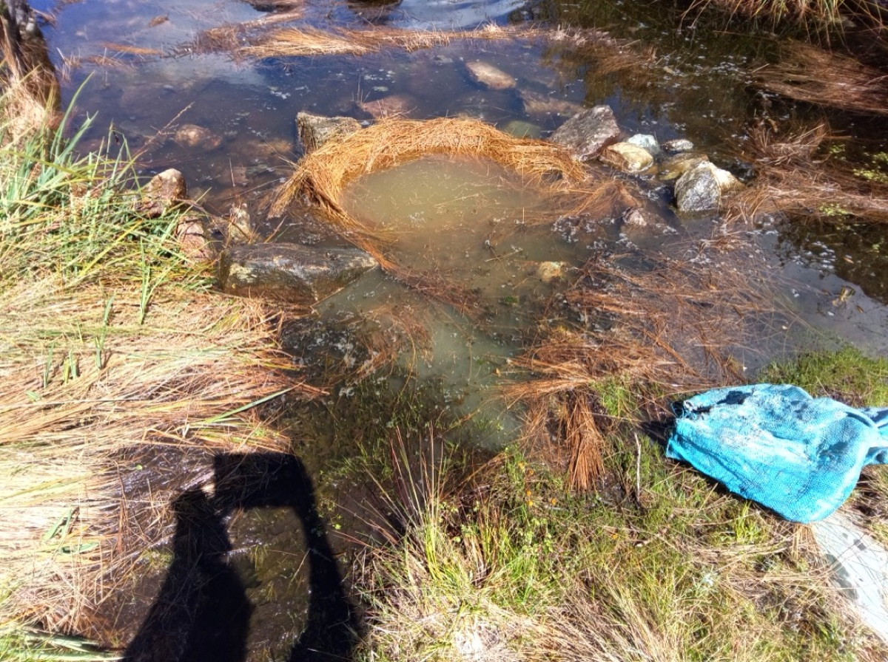
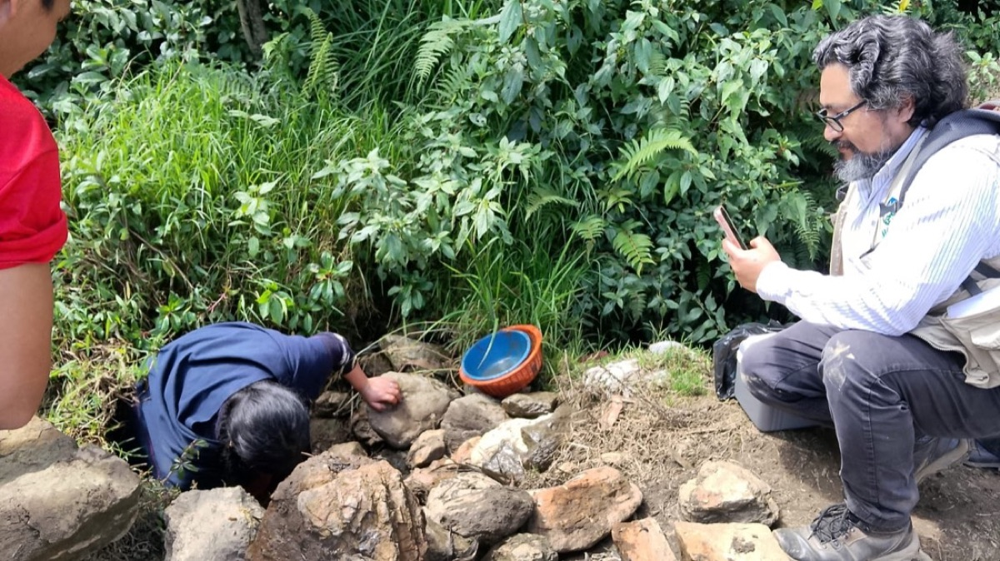
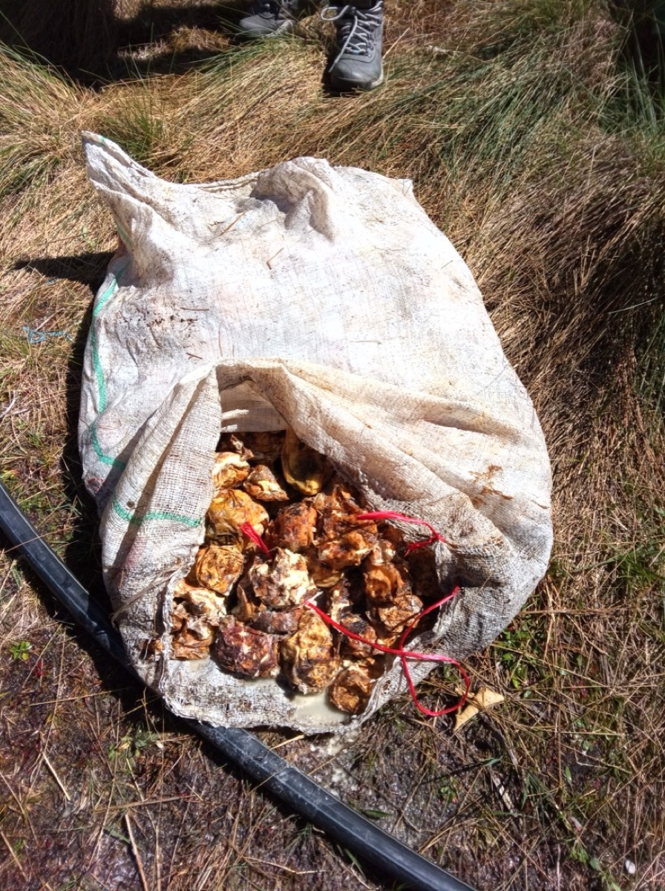

Raul Y. Tito Tadeo
Microbiome & gut eukaryote research
KU Leuven · Raes Lab (VIB Center for Microbiology)
I study the human gut microbiome as a multi-domain ecosystem — bacteria together with their eukaryotic neighbours. My recent work spans quantitative microbiome profiling and its confounders, the role of gut eukaryotes such as Blastocystis in metabolic health, microbiome signatures in disease cohorts from gut–brain disorders to preclinical rheumatoid arthritis, and equitable microbiome research with communities across the urbanization continuum, from Flanders to the Peruvian Amazon. Dual doctorate: Biomedical Sciences (KU Leuven) and Bio-Engineering Sciences (Vrije Universiteit Brussel).
Research themes
Quantitative, multi-domain microbiome profiling
Moving the field from relative to quantitative profiles — microbial load, confounders, and what they change about disease associations.
Gut eukaryotes in human health
Blastocystis and other single-cell eukaryotes: their prevalence and subtypes at population scale, links to metabolic health, and the methodological pitfalls of studying them.
Microbiome across lifestyles and geography
How industrialization and urbanization reshape the gut ecosystem — including how to do this research with, not on, Amazonian communities.
Microbiome in disease cohorts
Gut–brain interactions in functional dyspepsia, preclinical rheumatoid arthritis, HIV and iron status, colorectal cancer.
Fieldwork





Selected publications
- Microbiome confounders and quantitative profiling challenge predicted
microbial targets in colorectal cancer development.
Nature Medicine, 2024
- Pitfalls in gut single-cell eukaryote research.
Trends in Parasitology, 2025
- Navigating trust and science: microbiome research in the Amazon.
Trends in Microbiology, 2025
- Population-level analysis of Blastocystis subtype prevalence
and variation in the human gut microbiota.
Gut, 2019
- Quantitative microbiome profiling links gut community variation to
microbial load.
Nature, 2017
- Population-level analysis of gut microbiome variation.
Science, 2016
Full list (66 works) on ORCID.